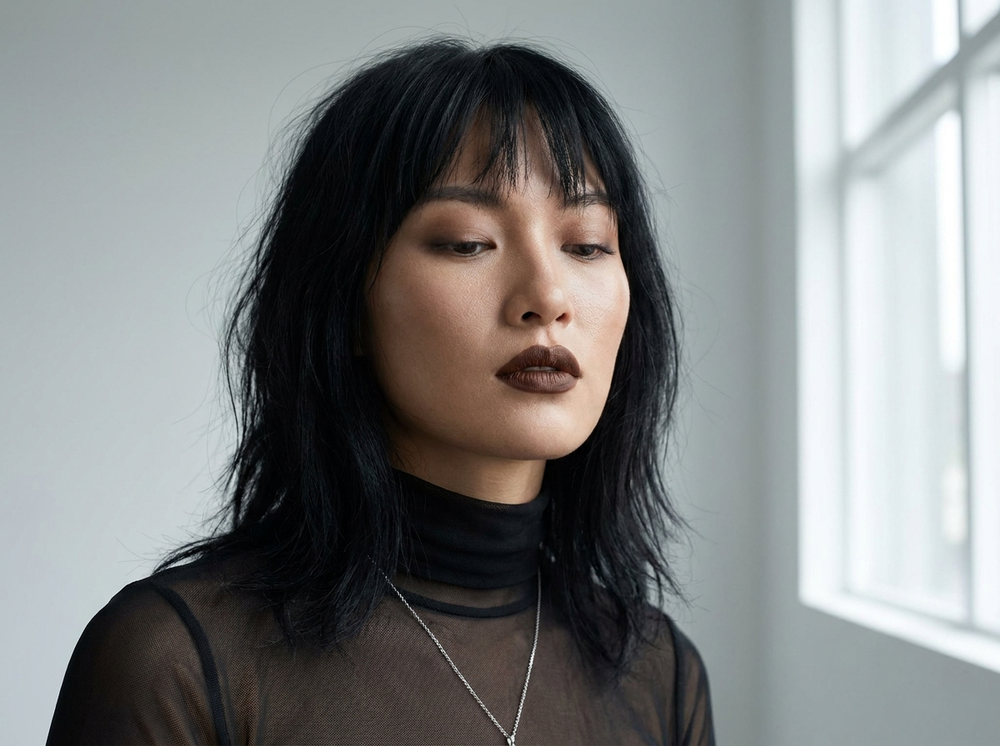
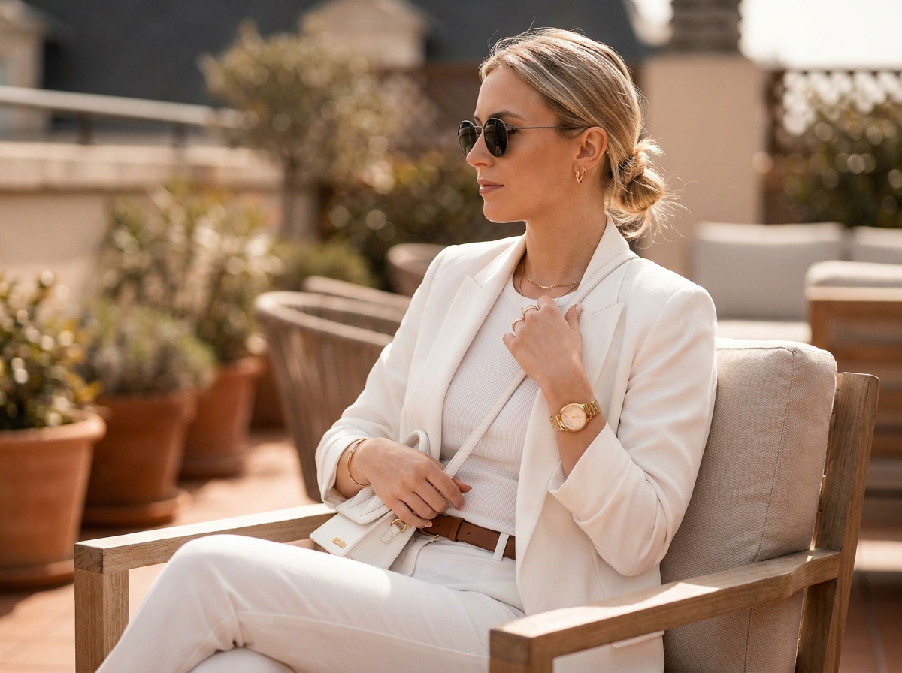
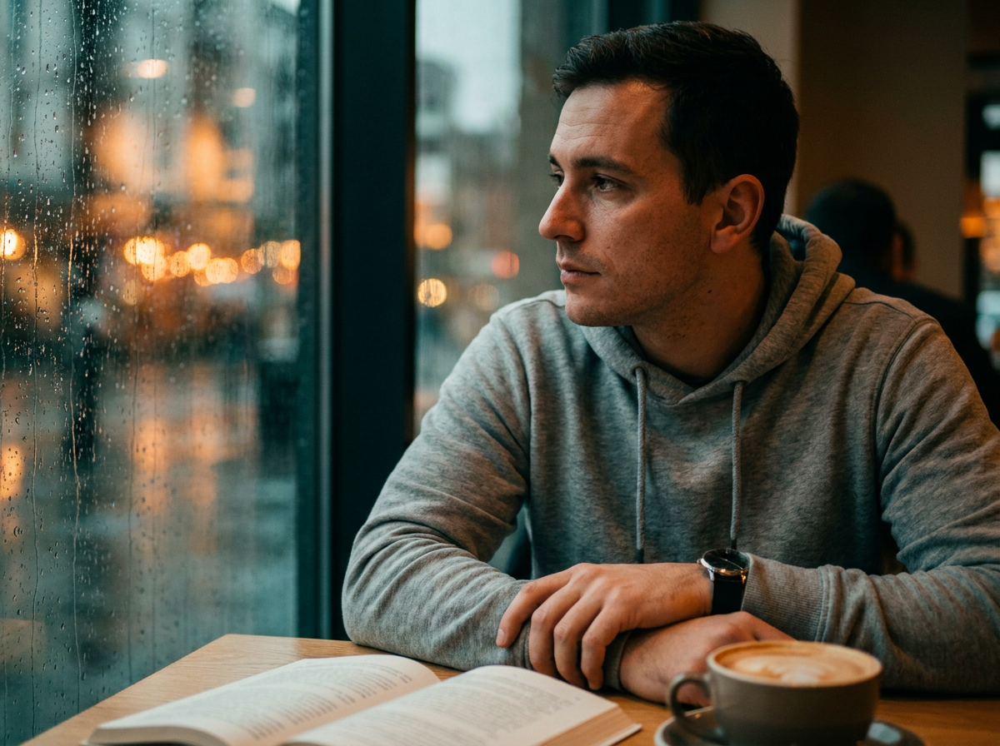
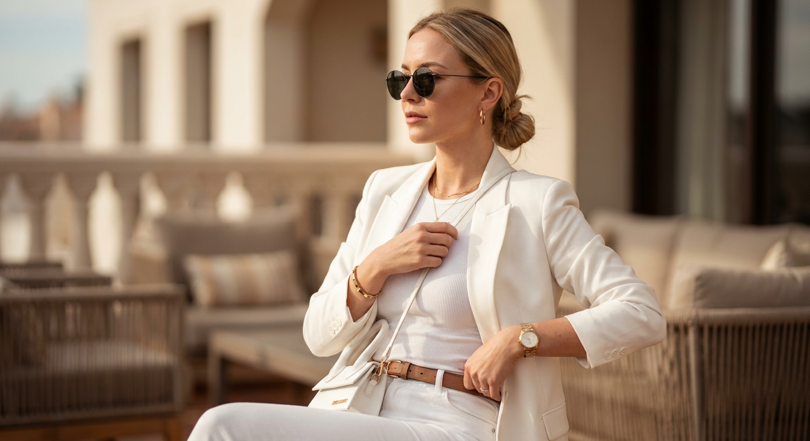
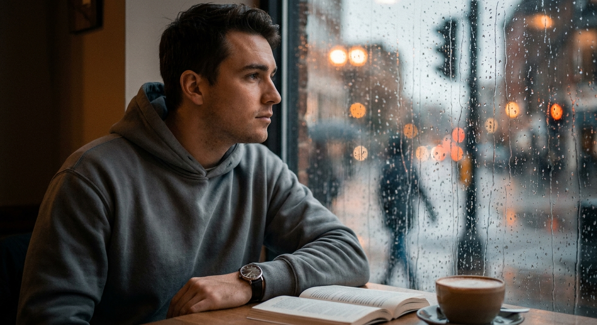
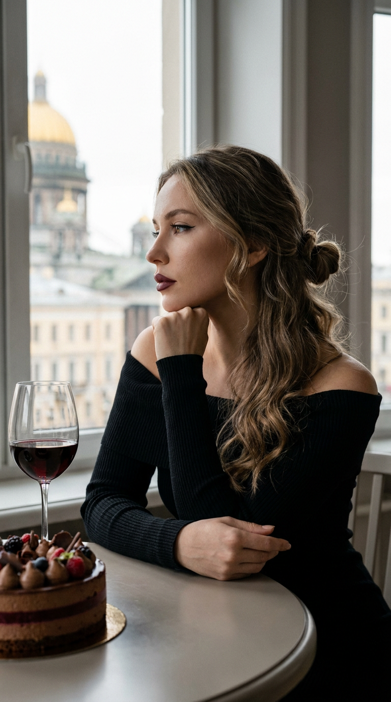
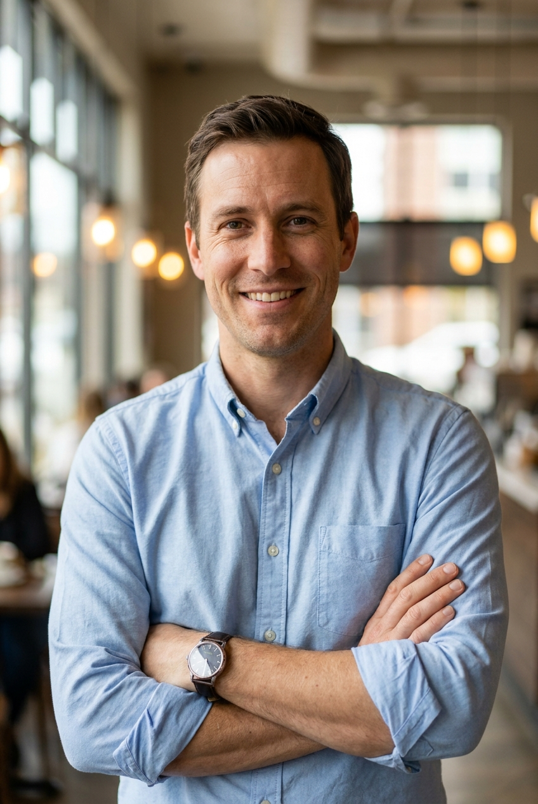
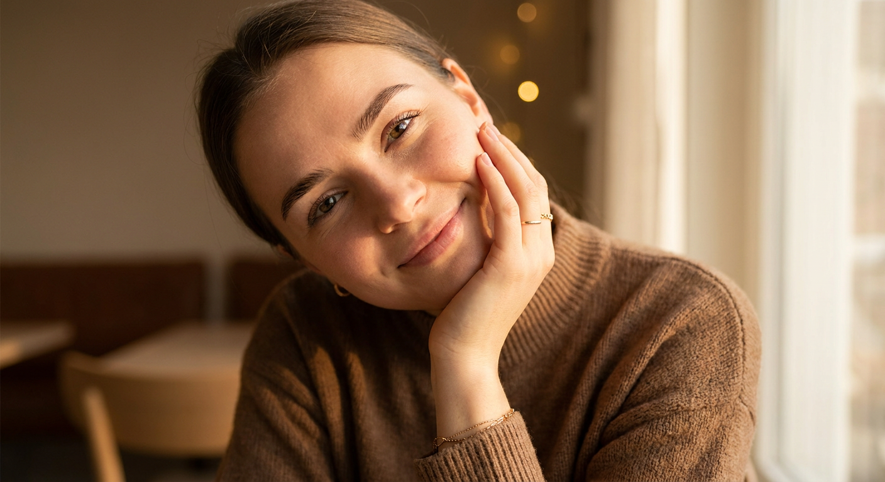
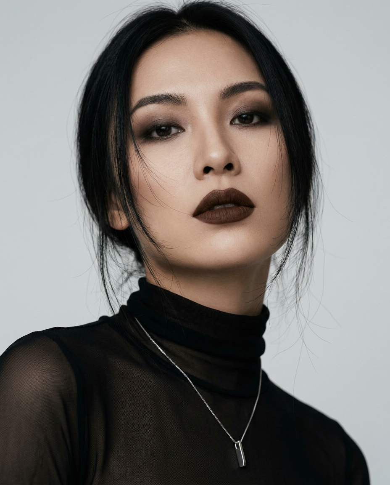

10 промптов для ИИ-фото на сайт знакомств: нейросеть
Хорошее фото для анкеты знакомств сложно снять случайно: мешают неудачный свет, зажатая поза и непривычный фон. Генерация помогает собрать выразительный кадр без фотостудии, долгих поисков локации и десятков дублей.
Внутри - 10 сценариев для разных образов: чёрно-белый editorial, терраса с солнечным светом, городская прогулка, деловой портрет, ванная со вспышкой и тихая сцена в кафе под дождём. В каждом промпте задана поза, композиция, настроение и параметры съёмки.
Как сгенерировать такое фото: пошагово
Нужен снимок анфас при ровном свете, лицо в кадре целиком, без тёмных очков и головных уборов. Разрешение от 1000 пикселей по короткой стороне. Чем чётче исходник, тем точнее модель повторит черты.
Выберите сценарий ниже и нажмите «Копировать» - текст уйдёт в буфер целиком, вместе с командой сохранения внешности. Эта команда стоит первой строкой и отвечает за то, чтобы на выходе было ваше лицо, а не случайное.
Кнопка «Сгенерировать» рядом с каждым промптом открывает модель в новой вкладке. Nano Banana Pro работает с референсом лица - в отличие от моделей, которые генерируют портрет с нуля и узнаваемость теряют.
Промпт - в поле ввода, портрет - через загрузку референса. Порядок значения не имеет, но без референса команда сохранения внешности работать не будет: модели нечего сохранять.
Для сторис и ленты берите 9:16, для превью и обложек - 4:3. Первый результат редко идеален: если поза или свет ушли не туда, поправьте соответствующую часть промпта и запустите заново. Обычно хватает двух-трёх итераций.
10 промптов для генерации
1. Чёрно-белый портрет у стены
Строго сохранить внешность по загруженному референсу: черты лица, пропорции, мимику и текстуру кожи без изменений. Художественный чёрно-белый fashion-портрет с репортажной интонацией, как съёмка для editorial-журнала. Фотореалистичная кожа, заметная фактура ткани, естественные мелкие детали и деликатное плёночное зерно. Женщина показана по пояс: она сидит или полулежит у дверного проёма, вдоль стены, корпус немного развёрнут влево, лицо обращено к камере в три четверти. Взгляд спокойный и уверенный, на губах лёгкая полуулыбка. Левая рука согнута, пальцы естественно касаются виска или волос возле уха; вторая рука расслаблена и частично выходит за границу кадра. Волосы уложены небрежно, отдельные пряди слегка двигаются. Сохранить узнаваемые глаза, брови и естественную мимику. Крупный вертикальный кадр, мягкий контраст, без глянцевой ретуши и искусственно гладкой кожи.
2. Солнечный кадр на террасе

Строго сохранить внешность по загруженному референсу: черты лица, пропорции, мимику и текстуру кожи без изменений. Сделать фотореалистичный lifestyle-портрет в эстетике beauty и fashion vacation. Дневное солнце мягко освещает открытую террасу кафе, задний план уходит в лёгкое боке. Женщина сидит за небольшим столиком, камера расположена на уровне глаз или чуть выше, композиция вертикальная. Она наклоняется вперёд и поддерживает подбородок сложенными руками: локти лежат примерно на уровне столешницы, одна кисть поддерживает голову, вторая находится рядом. Взгляд направлен прямо в объектив, выражение дружелюбное, но сдержанное, допустима мягкая полуулыбка. Волосы выглядят слегка растрёпанными ветром. Макияж гламурный, с выразительными глазами, тёпло-коричневыми или нюдовыми тенями и аккуратно подчёркнутым взглядом. Сохранить индивидуальные пропорции лица, естественную кожу, реальные складки одежды и живую фактуру света. Вертикальный кадр без чрезмерной ретуши.
3. Вспышка в бордовой ванной

Строго сохранить внешность по загруженному референсу: черты лица, пропорции, мимику и текстуру кожи без изменений. Ультрареалистичный вертикальный портрет 9:16, будто снятый на iPhone со вспышкой. Плотный кадр по пояс с лёгким смещением объекта от центра, чтобы появилась динамичная асимметрия. Место действия - просторная современная ванная: стены покрыты крупной бордовой глянцевой плиткой, в ней отражаются блики вспышки. Сзади видны зеркала в тонких рамах и настенные бра с тёплыми лампами, контрастирующими с холодным светом камеры. Девушка стоит полубоком, корпус слегка развёрнут, поза одновременно расслабленная и уверенная. Одна рука спрятана в кармане тёмных джинсов, вторая держит ручку стильной сумки, образуя диагональ. Она смотрит прямо в объектив, выражение спокойное, с лёгким вызовом. На ней красный матовый трикотажный топ с глубоким вырезом на спине и тёмные прямые джинсы с высокой посадкой. Реалистичная кожа, точная анатомия рук, без лишнего глянца.
4. Городской портрет у перил

Строго сохранить внешность по загруженному референсу: черты лица, пропорции, мимику и текстуру кожи без изменений. Фотореалистичный street-style портрет на открытом воздухе в духе urban lifestyle. Использовать мягкий пасмурный дневной свет без резких теней, натуральную цветопередачу и умеренную плёночную зернистость. На переднем плане - пешеходная набережная или мостовая с брусчаткой либо плиткой, рядом чёрные металлические перила с вертикальными стойками и горизонтальными перекладинами. Вдали угадывается исторический центр: крупное здание с колоннами и куполом, архитектурные линии и прохожие, сильно размытые глубиной резкости. Женщина стоит рядом с ограждением, её лицо развёрнуто чуть в сторону и смотрит мимо камеры. Выражение спокойное, собранное, уверенное. Фон узнаваемый по силуэтам, но не отвлекает от лица. Сохранить индивидуальные черты внешности, естественную текстуру кожи и ткани, без сильной цветокоррекции. Киношное настроение, мягкое боке, реалистичные пропорции тела.
5. Разговор у окна собора

Строго сохранить внешность по загруженному референсу: черты лица, пропорции, мимику и текстуру кожи без изменений. Создать вертикальную кинематографичную сцену 9:16 в качестве 8K HDR, с фотореалистичной кожей, мягким боке, малой глубиной резкости, лёгким плёночным зерном и едва заметным motion blur, будто это живой кадр авторского фильма. Элегантная женщина сидит за круглым столом у большого окна. За стеклом открывается вид на старый европейский город; в перспективе виден собор с золотым куполом, который мягко подсвечен дневным светом. Атмосфера тихая, задумчивая, с лёгкой меланхолией. Женщина слегка откинулась на спинку стула, голову повернула влево, лицо показано в профиль или в три четверти. Подбородок немного поднят, взгляд направлен в сторону окна, а не в объектив. В кадре должны ощущаться спокойствие и пауза между репликами. Сохранить лицо, цвет и текстуру кожи без изменений, не превращать портрет в глянцевую рекламу. Мягкий дневной свет, натуральные тени, аккуратная композиция.
6. Тёплый деловой портрет мужчины

Строго сохранить внешность по загруженному референсу: черты лица, пропорции, мимику и текстуру кожи без изменений. Фотореалистичный портрет мужчины для анкеты знакомств в стиле business casual и профессионального headshot. Использовать мягкий дневной свет без жёстких теней. Фон - интерьер офиса или кафе с сильным размытием: окна, светильники и отдельные огни превращаются в спокойное боке, не конкурирующее с лицом. Вертикальная композиция, кадр от плеч до верхней части груди, можно оставить часть рук и верх торса. Мужчина стоит прямо, корпус слегка повёрнут к камере, руки скрещены или собраны на груди: одна кисть поддерживает другую, локти немного отведены. Камера находится на уровне глаз либо чуть выше. Взгляд прямой, выражение открытое, на лице тёплая дружелюбная улыбка. Кожа должна сохранять поры и естественную текстуру, без пластиковой гладкости и чрезмерного выравнивания тона. Одежда аккуратная, в нейтральном business casual стиле. Реалистичные кисти, правильные пропорции плеч, мягкая глубина резкости.
7. Уютный свитер и мягкая улыбка

Строго сохранить внешность по загруженному референсу: черты лица, пропорции, мимику и текстуру кожи без изменений. Сделать фотореалистичный lifestyle-портрет молодой женщины крупным планом: в кадре голова и верх плеч, композиция слегка наклонена по диагонали. Лицо повернуто к камере в три четверти. Женщина улыбается мягко, губы сомкнуты, взгляд направлен к объективу или немного мимо него. Поза непринуждённая: правая рука поднята к щеке или подбородку, пальцы легко касаются лица, естественный изгиб кисти, локоть остаётся за пределами кадра. Брови аккуратные и густые. Макияж натуральный, в тёплой нюдовой гамме: лёгкий хайлайт, деликатная тушь или мягкая подводка, губы персиково-розового оттенка. Кожа реалистичная, с видимой текстурой и порами, без эффекта пластика. Одежда - тёплый свитер крупной вязки или плотного трикотажа, чтобы в кадре читался рельеф материала. Мягкий рассеянный свет, спокойные цвета, естественная мимика, точная анатомия пальцев.
8. Драматичный ракурс снизу

Строго сохранить внешность по загруженному референсу: черты лица, пропорции, мимику и текстуру кожи без изменений. Вертикальный фотореалистичный fashion-портрет девушки с низкой точки съёмки: камера находится немного ниже уровня подбородка, поэтому лицо выглядит выразительным и скульптурным. Подбородок слегка поднят, шея вытянута, голова держится уверенно. Взгляд направлен прямо в объектив или чуть вниз, выражение холодное, спокойное и загадочное. Улыбки нет, допустима едва заметно приоткрытая губа. Композиция editorial, с драматичным настроением и акцентом на линию лица, скулы и подбородок. Волосы имеют мягкую текстуру и лёгкую небрежность, несколько тонких прядей свободно обрамляют лицо. Свет подчёркивает объём, но не создаёт жёстких провалов в тенях. Сохранить возрастные особенности, тон кожи, линию роста волос и индивидуальные черты лица без обобщения. Реалистичная кожа, натуральные пропорции, умеренная глубина резкости, чистый фон без случайных деталей.
9. Терраса и ремешок сумки

Строго сохранить внешность по загруженному референсу: черты лица, пропорции, мимику и текстуру кожи без изменений. Фотореалистичный fashion-портрет в стиле editorial lifestyle, снятый при тёплом дневном свете с мягкой кинематографичной цветокоррекцией. Резкость должна оставаться на лице и верхней части тела, а фон террасы или веранды - уходить в сильное боке. Женщина сидит на мебели, кадр охватывает тело от плеч до бедра: видны торс, руки, часть талии и ног. Поза профильная или в три четверти вправо, лицо повёрнуто направо, подбородок слегка приподнят, выражение спокойное. Одна рука находится внизу кадра и держит край либо ремешок сумки или опирается возле талии. Вторая поднята к верхней части сумки или клатча, пальцы аккуратно удерживают ремешок. Показать детали одежды, металлические элементы и украшения с высокой точностью, но не делать их чрезмерно блестящими. Мягкий фон, натуральная кожа, реалистичные кисти и ткань, без рекламной постановочности.
10. Мужчина у окна в дождь

Строго сохранить внешность по загруженному референсу: черты лица, пропорции, мимику и текстуру кожи без изменений. Создать фотореалистичный cinematic lifestyle-портрет мужчины в интерьере кафе с тёплой мягкой подсветкой. За окном идёт дождь: на стекле хорошо видны многочисленные капли и потёки, а городские огни превращаются в сильное боке - тёплые оранжевые фонари и светофоры. Вдали заметны размытые силуэты людей и машин, но никаких читаемых вывесок. Внутри использовать холодные серо-синие оттенки, снаружи оставить тёплые огни, создавая мягкий teal-and-orange контраст. Добавить лёгкую плёночность, умеренный контраст и сохранить детали в светах, без жёстких пересветов. Мужчина сидит за столом, его взгляд направлен вдаль, в сторону окна. Выражение спокойное и задумчивое, губы расслаблены, без широкой улыбки. Брови естественные, кожа с видимой текстурой. Кадр камерный, с неглубокой глубиной резкости и акцентом на лице, но дождь и огни должны оставаться узнаваемой частью композиции.
Что важно учесть в этом стиле
Для анкеты лучше работают кадры, где лицо видно без экстремального размытия и перекрывающих его аксессуаров. Даже editorial-сцена должна сохранять понятную мимику: спокойный взгляд, лёгкую улыбку или задумчивое выражение.
Поза должна выглядеть выполнимой, а не похожей на каталог сложных жестов. Отдельно прописывайте положение рук, направление взгляда, высоту камеры и глубину резкости. Если нужен реалистичный результат, добавляйте фактуру кожи, ткани, стекла и металла, но не перегружайте промпт десятками эффектов.
Идеи для вариаций
- Заменить террасу кафе на книжный магазин, летнюю веранду или поезд.
- Попросить съёмку с объективом 50 мм для естественной перспективы или 85 мм для более плотного портрета.
- Сделать тот же образ в формате 4:5 для ленты профиля и 9:16 для сторис.
- Поменять пасмурный свет на золотой час, не меняя позу и выражение лица.
- Добавить в кадр чашку кофе, виниловую пластинку, букет или зонт как один смысловой акцент.
Как собрать свой промпт
Начните с назначения фотографии: портрет для анкеты, прогулочный кадр или снимок в интерьере. Затем задайте формат, план, положение камеры и позу. После этого опишите локацию, источник света, фон и настроение. Такая последовательность помогает модели не потерять главные условия.
В финале укажите технические ограничения: естественная текстура кожи, правильная анатомия рук, умеренное боке, отсутствие нечитаемых надписей и лишних людей на переднем плане. Для одного образа лучше менять по одному параметру за попытку - например, только свет или только одежду. Так проще понять, что именно улучшило результат.
Ошибки, из-за которых кадр не получается
- Слишком много задач в одном запросе. Модель смешивает локации, свет и одежду, поэтому сначала задайте основу, а детали добавляйте постепенно.
- Неуточнённое положение рук. Появляются лишние пальцы, странные кисти и неестественные суставы; описывайте каждую руку отдельно.
- Противоречивый свет. Солнце, вспышка и мягкая лампа одновременно дают неубедительные тени.
- Сильная ретушь лица. Формулировки про идеальную кожу часто стирают реальные черты и делают человека неузнаваемым.
- Случайные надписи на фоне. Просите размытые вывески или отсутствие читаемого текста, особенно в городских сценах.
Частые вопросы
Как сделать такое ИИ-фото бесплатно?
Для первых попыток подойдут Kandinsky и Шедеврум: у них есть бесплатная генерация, но число запросов, скорость и качество могут меняться. Krea AI и Arena.ai позволяют тестировать разные режимы и модели, однако бесплатный доступ обычно ограничен очередью, количеством генераций или функциями редактирования. Работа с референсом поддерживается не одинаково: где-то можно загрузить изображение напрямую, а где-то доступны только текстовые запросы или ограниченная стилизация. Для анкеты проверьте, что сервис не меняет лицо до неузнаваемости.
Как сохранить сходство с фотографией?
Загружайте чёткий референс анфас или в лёгком три четверти, без очков, сильных теней и фильтров. В промпте отдельно фиксируйте форму глаз, носа, губ, овал лица, тон кожи и возрастные особенности. Не меняйте одновременно ракурс, причёску и возраст - это чаще всего снижает узнаваемость.
Какой формат выбрать для анкеты знакомств?
Для главного снимка обычно удобен вертикальный формат 4:5: лицо и верх тела занимают достаточно места, а изображение хорошо выглядит в ленте. Для сторис и некоторых экранов подойдёт 9:16. Генерируйте исходник с запасом по разрешению, чтобы не потерять детали после обрезки.
Можно ли использовать сгенерированное фото в профиле?
Проверьте правила выбранного сервиса и условия конкретной модели: они могут отличаться для личного и коммерческого использования. Не выдавайте полностью вымышленный образ за документальное фото и не используйте чужой референс без разрешения. Если изображение заметно изменяет внешность, лучше воспринимать его как дополнительный кадр, а не единственную фотографию в анкете.